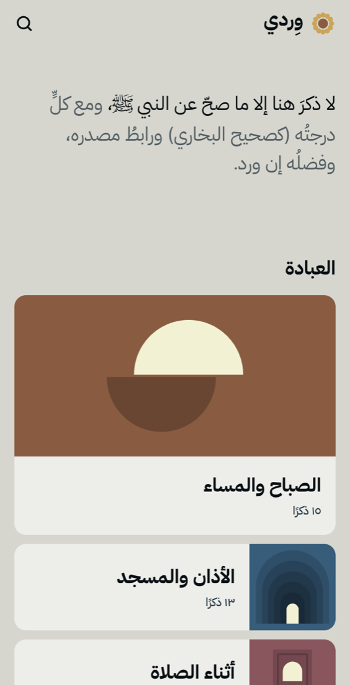
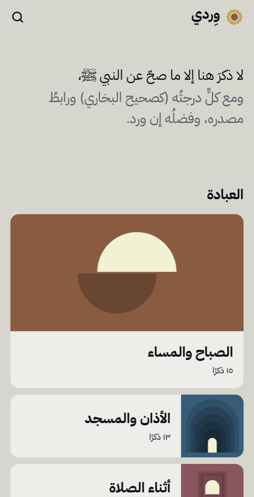
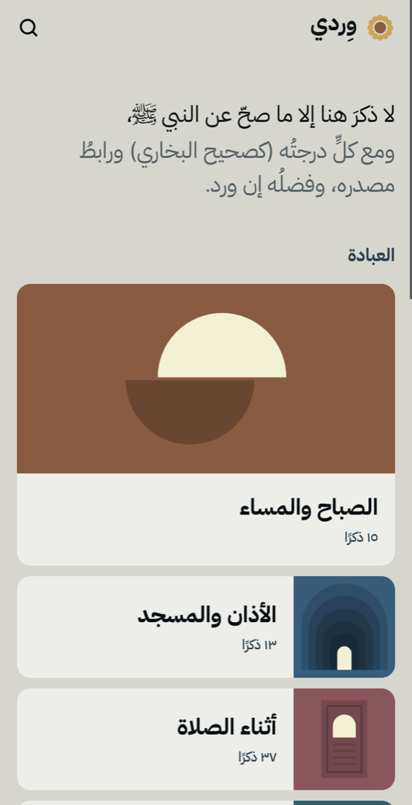
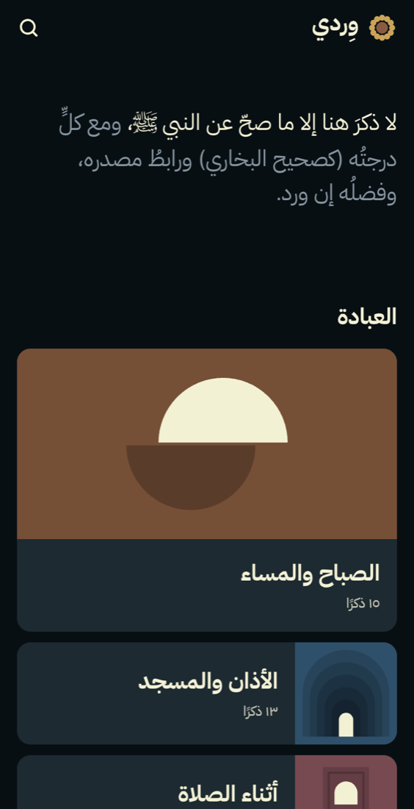
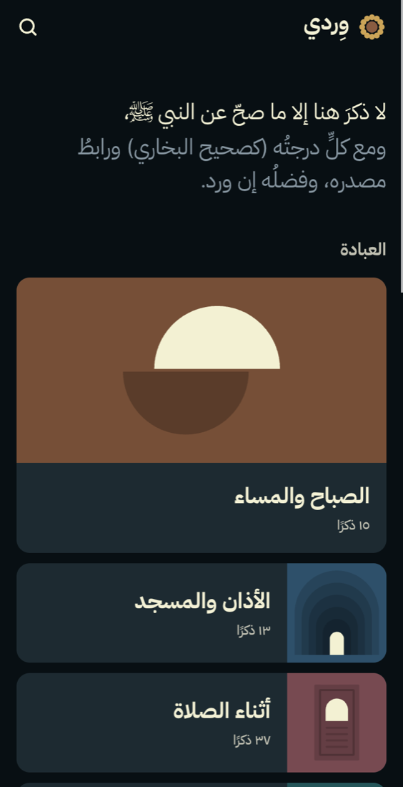
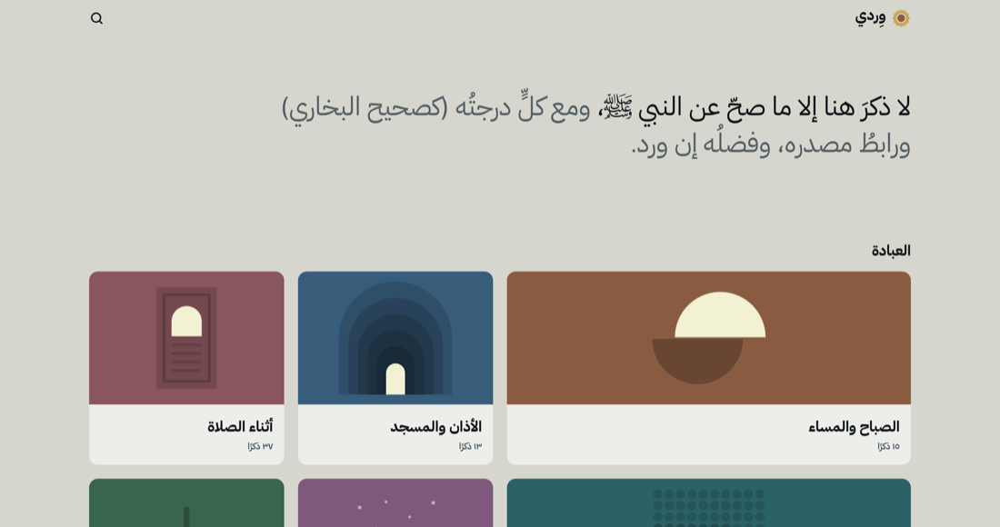
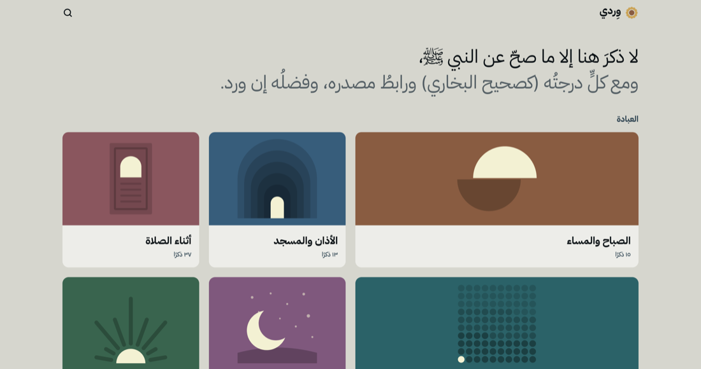
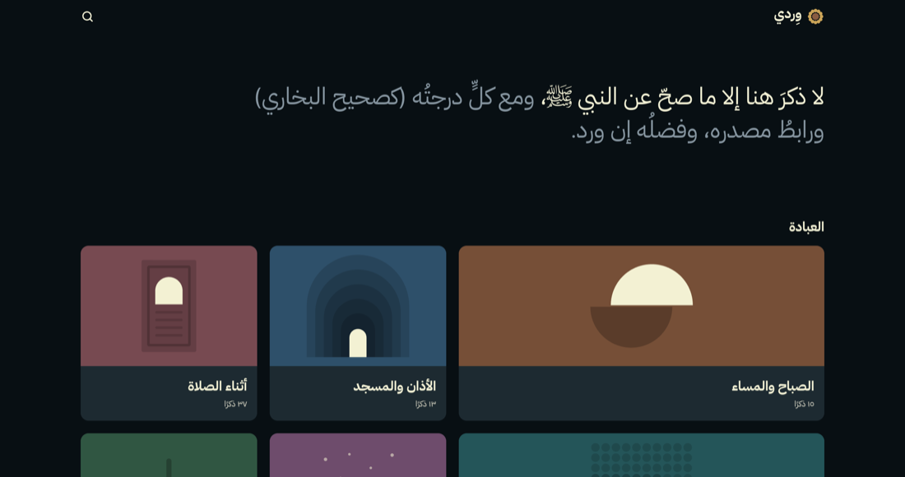
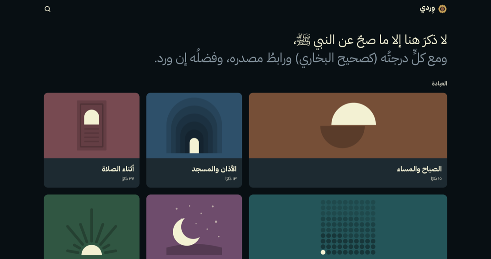

Review of 43ebaa0: the home page title line
The commit replaces the home line with «لا ذكرَ هنا إلا ما صحّ عن النبي ﷺ،» and a second clause in the faint ink, «ومع كلٍّ درجتُه (كصحيح البخاري) ورابطُ مصدره، وفضلُه إن ورد». Each finding below was measured in Brave on the build of main as committed, at 320, 390, 834, and 1440 px, light and dark. The "after" images are main with only the proposed CSS added. Nothing here is applied until the owner approves.
What holds up
- The words: a claim in ink, then what comes with each dhikr in the faint ink. The two inks read as one sentence with a clear first part.
- Contrast: the faint clause is 4.77:1 on the paper by day and 6.29:1 at night, above the 4.5:1 that text of 20 to 21 px needs. The ink part is 13.34:1 and 16.90:1.
- Punctuation: no space before «،», and the salawat stays on the line of «النبي» (a non-breaking space).
- Over the recolored cards it stays quiet in both modes: the cards carry the color, the line carries the words.
1. The faint clause starts at the end of the first line
On a phone the first line ends with «ومع كلٍّ», so the faint clause begins mid-line and its first two words hang at the end of the claim. On a wide screen the clause runs on after «ﷺ،» to «(كصحيح البخاري)». The two inks only read as two parts when each starts a line.
Proposal: the faint clause starts its own line.
.hero__more {
display: block;
}


2. Twice as much space below the line as above it
The line is centred in a box of fixed height (192 px on a phone, 256 px wide), and the first band adds 40 px more. Measured from the bar to the line and from the line to «العبادة»: 47 and 87 px at 390, 77 and 117 px at 1440. The box also cannot grow: at 200% text on a 390 px phone the line already runs 4 px past the bottom of its box. The band's margin hides it today (76 px still separate it from «العبادة»), but a longer line, or larger text, would run into the band. The branch gives the box a minimum height instead.
Proposal: the box takes the height of its text, with the band spacing above it, so the line has 40 px above and 40 px below at every width.
.hero {
height: auto;
padding-block: var(--space-10) 0;
}
3. The band title is as large as the line above it
On a phone «العبادة» is 21.33 px bold under a line of 21.33 px: the heading of a band competes with the page's one sentence. Inside a section the branch already makes group titles secondary (17 px, bold, in the muted ink); the bands of the home page are the same kind of title.
Proposal: the band titles take the same style as the group titles.
.section-bands__title {
color: var(--color-ink-muted);
font-size: var(--text-body);
font-weight: var(--weight-bold);
}
All three together
| Above the line | Below the line | Band title | |
|---|---|---|---|
| Now, 390 px | 47 px | 87 px | 21.33 px |
| Now, 1440 px | 77 px | 117 px | 21.33 px |
| Proposed, every width | 40 px | 40 px | 17 px |







Already in the branch
-
No full stop at the end of the line, with every other text that is also metadata (note
F8). If the owner wants the full stop back on the visible line only, it can live in
Hero.astrorather than inSITE.promise.more. - The box grows with its text: at 200% text the line ends 32 px inside it, 112 px above «العبادة».